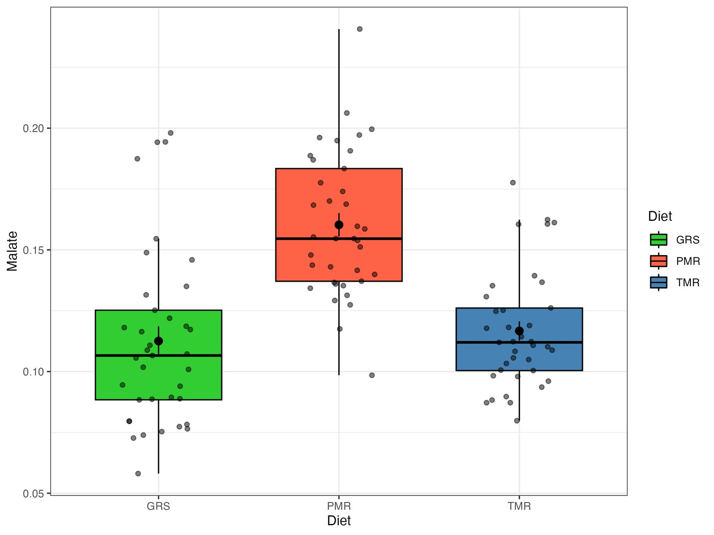
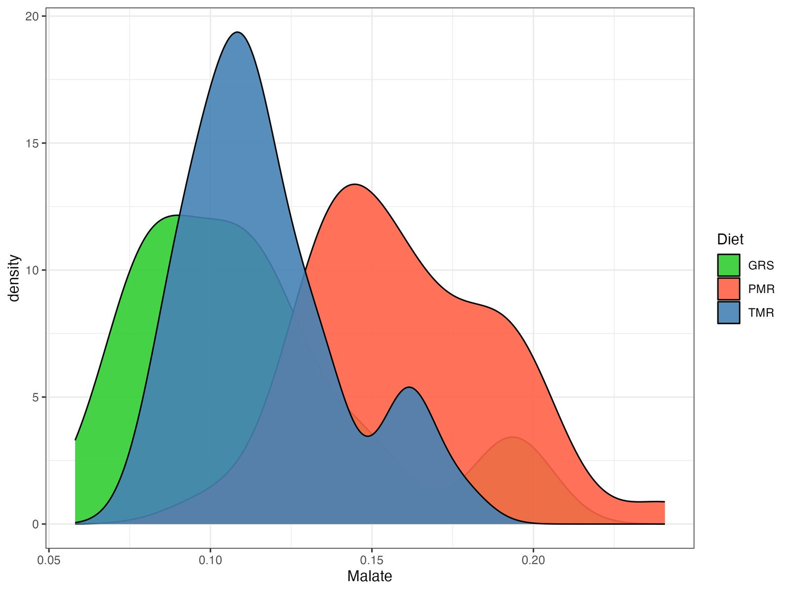
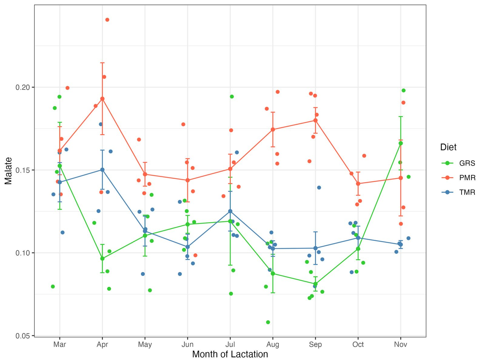
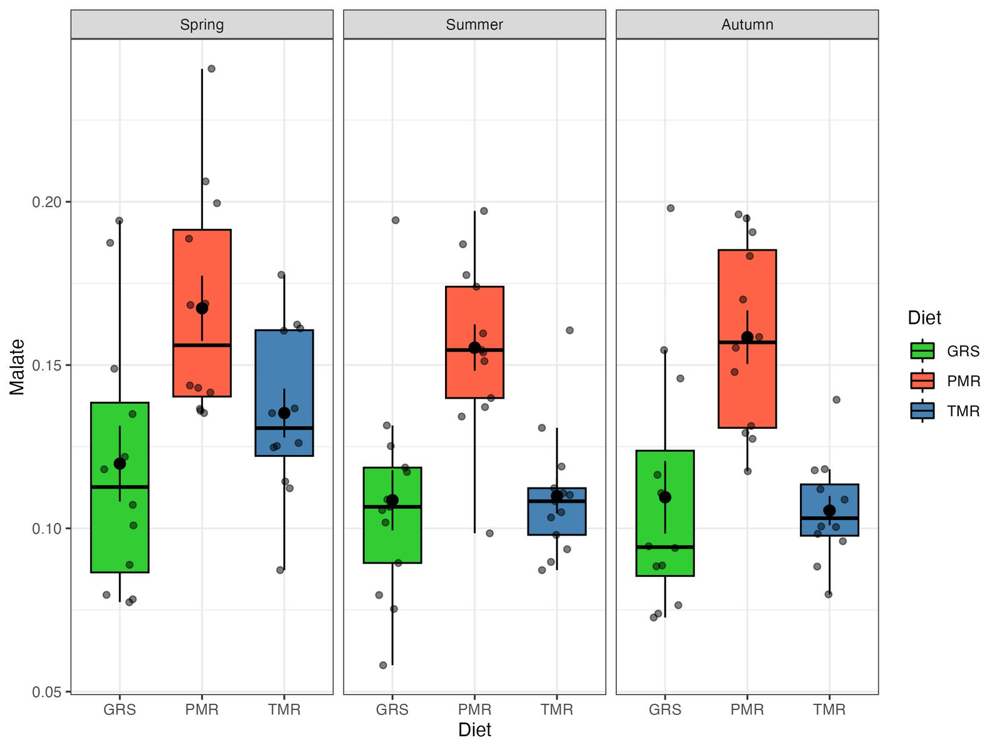

MetaBó-Cards / Malate
Malate
Energy metabolismMBB32Malate is an intermediate in the tricarboxylic acid (TCA) cycle.
Look it up: HMDB ↗ · PubChem 525 ↗ · ChEBI ↗ · KEGG ↗
About Malate
- Chemical class
- Tricarboxylic acid
- Biochemical description
- Malate is an intermediate in the tricarboxylic acid (TCA) cycle. Malate is generated from fumarate and plays an important role in cellular respiration and energy production.
- Relevance in milk and feeding systems · diet study
- Malate concentrations were significantly influenced by feeding system (p < 0.001), with higher concentrations in milk from PMR diets compared to GRS and TMR diets.
- MetaBó-Bainne ID
- MBB32
- Milk Composition Database
- BMDB0000744 ↗
- PubChem compound
- CID 525 ↗
Pasture proportion in the diet
Diet p <0.001Season p = 0.077Diet × season p = 0.601
| Season | GRS | PMR | TMR |
|---|---|---|---|
| Spring | 0.12 ± 0.039 | 0.167 ± 0.033 | 0.135 ± 0.025 |
| Summer | 0.109 ± 0.032 | 0.155 ± 0.025 | 0.11 ± 0.019 |
| Autumn | 0.11 ± 0.035 | 0.159 ± 0.027 | 0.105 ± 0.015 |
Diet study · individual samples
Figures
Plots of every milk sample in the diet study. Click to enlarge.








Related metabolites
Other energy metabolism compounds in the database.